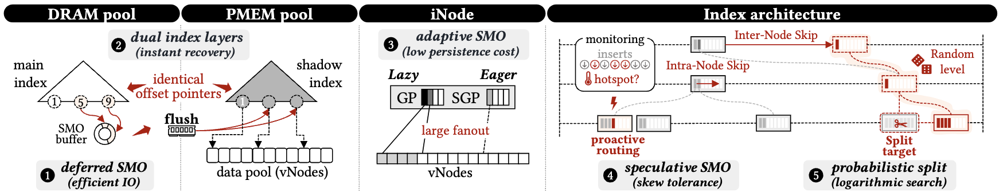

What is TandemKV?
A write-efficient KV engine for heterogeneous DRAM–NVM memory that decouples index maintenance from durability. Structure modification operations (SMOs) execute on the DRAM main index first; durable reconciliation with the PMEM shadow index is a separate, runtime-controlled decision — governed by explicit thresholds rather than triggered on every write.
Core contributions
1New control boundary for durable indexing — SMOs need not be synchronous persistence tasks; structural durability is controlled independently by runtime signals
2Dual-index architecture — DRAM main index for foreground access + PMEM shadow index as durable recovery image, with symmetric offset-based addressing for crash-safe reuse
3Adaptive SMO policy — deferred SMOs amortize write cost under random inserts; speculative SMOs (SGPs) provision routing capacity proactively under skewed workloads
4Prototype on Intel Optane PMEM evaluated against Prism, FluidKV, ListDB, DPTree across the full YCSB suite under both uniform and Zipfian distributions
Motivation
Eager index logging puts every structural update — split, merge, guidepost activation — on the foreground path as a synchronous
CLWB+SFENCE. The bottleneck isn't NVM bandwidth; it's the assumption that every structural refinement must be made durable immediately. Data correctness and index search-quality have different persistence requirements: committed values must be atomically durable, but the index only needs to preserve reachability with bounded post-crash search degradation — so the recovery index can safely lag behind the runtime index in a controlled manner.
Design principles
① Decouple search from durability
SMOs proceed on the volatile structure without waiting for persistence. Durable propagation is a separate, runtime-controlled decision driven by search-quality and divergence signals — not a per-update obligation.
② Crash-stable addressing
Symmetric virtual-address regions in DRAM and PMEM, with every internal reference encoded as a pool-relative offset rather than an absolute pointer. Restart re-maps the region and reuses the persisted image with zero pointer fix-up.
③ Adaptive, I/O-efficient structure
Skiplist-style navigation for cheap, lock-free reorganization, combined with B⁺-tree-style wide nodes for spatial locality and bounded search depth. Per-node guideposts activate incrementally so structural pressure is absorbed without full splits.
④ Recovery-aware adaptive SMOs
Two complementary policies shape the SMO mix to the workload: deferred SMOs amortize structural writes under random inserts; speculative SMOs pre-provision routing capacity under skew. Both keep reorganization off the persistence-critical path.
Where TandemKV sits in the design space
Prior durable indexes either trigger SMOs on capacity / model-error signals and treat persistence as orthogonal, or persist eagerly and pay the cost on every insert's critical path. TandemKV is the only design that pairs speculative SMOs with persistence-aware triggers — restructuring fires on the signals that matter for durable systems, and happens before the workload forces a synchronous split.
| Index | Instant recovery | SMO trigger | Speculative SMO | Persist-aware |
|---|---|---|---|---|
| B-tree | ✗ | Capacity threshold | ✗ | ✗ |
| Bw-tree | ✗ | Capacity threshold | ✗ | ✗ |
| ALEX | ✗ | Model error | Preemptive split | ✗ |
| BLI | ✗ | Distribution error | Bucket split | ✗ |
| ShapeShifter | ✗ | Access hotspot | Node expansion | ✗ |
| AHA-tree | ✗ | Access frequency | B⁺ switch | ✗ |
| FluidKV | Partial · manifest + replay | Read / write ratio | ✗ | ✗ |
| Prism | Always-persistent | Eager (every SMO) | ✗ | ✗ |
| TandemKV | DRAM–PMEM dual, remap-free |
Path stability + divergence |
SGP prefill / link |
Write cost + crash quality |
green = matches TandemKV's design goal; amber = partial support; red = absent. TandemKV is the only entry with green in all four design-goal columns.
The three knobs at a glance
Three orthogonal control parameters govern adaptive SMO management.
σ — path stability
"How much routing imbalance is tolerated before local SMO fires?"
δ — shadow divergence
"How far may the shadow drift before a checkpoint is forced?"
m — noise margin
"How much predicted insert pressure justifies pre-allocating an SGP?"
Headline results
−50% I/O
Index-write volume reduction
>90% ckpts
Fewer checkpoints with tunable δ
2.36GB NVM
Reasonable resource utilization
≈0s recovery
Instant recovery (stale-shadow mode)
Recovery (log-replay mode):
0.05 s at δ=1.01 to 1.65 s at δ=10 — bounded by the size of the deferred SMO redo log, not by an index rebuild.
When TandemKV fits — and when it doesn't
▸ Good fit
· KV workloads on heterogeneous memory (DRAM + byte-addressable Optane DIMM/CMM-H...).
· Mixed read/write traffic spanning both random and skewed access patterns — adaptive SMO mix is a well fit for shifting workloads.
· Write-heavy or insert-bursty workloads where critical-path persistence dominates.
· Deployments that favor fast post-crash availability with low index persistence cost at runtime.
· Mixed read/write traffic spanning both random and skewed access patterns — adaptive SMO mix is a well fit for shifting workloads.
· Write-heavy or insert-bursty workloads where critical-path persistence dominates.
· Deployments that favor fast post-crash availability with low index persistence cost at runtime.
▸ Not the right tool
· Distributed / sharded deployments — replication and partitioning are not supported yet.
· Pure read-only datasets — the deferred / speculative machinery has nothing to amortize over; a static B⁺-tree or learned index would do as well with less complexity.
· Block-only storage hierarchies (no byte-addressable NVM) — the symmetric-pool / offset addressing assumes DAX-style load/store access.
· Pure read-only datasets — the deferred / speculative machinery has nothing to amortize over; a static B⁺-tree or learned index would do as well with less complexity.
· Block-only storage hierarchies (no byte-addressable NVM) — the symmetric-pool / offset addressing assumes DAX-style load/store access.
Beyond Optane — emerging memory solutions
TandemKV depends on three hardware properties: byte-addressability, DAX-style load/store, and hardware-managed persistence ordering. CMM-H (CXL-attached persistent memory: DRAM cache backed by NAND via fsdax) satisfies all three, making it a natural successor target. Two design choices line up especially well: stale-shadow recovery exploits spatial locality instead of pointer-chasing rebuilds, and group-committed persistence reinforces CMM-H's internal coalescing — TandemKV reduces flushes reaching the device, CMM-H reduces NAND amplification per flush.
Key terminology
SMOStructure modification operation — split / merge / GP activation
σPath-stability threshold — when DRAM rebalancing fires
iNodeInternal routing node (DRAM main index)
δShadow-divergence threshold — when PMEM shadow checkpoints
vNodeAppend-only value node (PMEM)
mNoise-rejection margin — gates SGP allocation on predicted pressure
GPGuidepost — stable routing entry inside an iNode
SGPSpeculative guidepost — dormant slot, pre-filled split key
Architecture
TandemKV splits responsibility across a DRAM index that serves every foreground operation and a PMEM image that is updated only by background propagation. The design goal is visible in what does not happen on the critical path: no PMEM index writes, no fences, no pointer fix-up, no synchronous checkpoint.

DRAM-resident main index
Skiplist-style traversal combined with B⁺-tree-inspired wide nodes — Serves all foreground reads and writes. Absorbs all SMOs immediately. Holds iNodes (routing) with references to PMEM vNodes (data). Lock-free traversal with targeted iNode/vNode caching.
PMEM-resident shadow index
An identical offset-based mirror of the DRAM iNode pool acts as the durable restart image with every cross-object reference encoded as a pool index rather than a pointer. Updated only at async checkpoints; can be memory-mapped and reused with no swizzling.
Value storage — persistent vNode pool
A separate data pool of append-only vNodes holds the actual records (separate from the index); writes land in unordered arrays via non-temporal stores. Bloom filters and per-entry fingerprints compensate for the unordered layout. An adaptive size-bounded DRAM Bloom-filter cache promotes filters for hot vNodes in the background.
Symmetric layout — offset-based addressing for crash-safe reuse
The DRAM main index and the PMEM shadow index live in virtual-address-symmetric pools: one reserved region in DRAM, one in PMEM, both indexed identically. Every cross-object reference inside the index — parent→child, GP→vNode, sibling links — is encoded as a pool-relative offset rather than an absolute pointer.
// instead of: Inode* child = parent->children[i]; // absolute pointer
// // → invalid after restart
// TandemKV uses: uint32_t off = parent->children[i]; // offset within iNode pool
// Inode* child = &iNodePool[off]; // resolved against pool base
Because offsets are independent of where the OS chooses to map the region, the persisted shadow image survives restart unchanged. Recovery does three things and nothing else:
1
2 Copy the checkpointed shadow image into the DRAM pool (offsets stay valid)
3 Reload lightweight runtime metadata (skiplist height, allocation counters) flushed periodically alongside checkpoints
No pointer swizzling, no address translation table, no log-replay-driven rebuild. The system serves traffic the moment the copy finishes.
1
mmap() the PMEM pool (DAX, no page-cache double-buffering)2 Copy the checkpointed shadow image into the DRAM pool (offsets stay valid)
3 Reload lightweight runtime metadata (skiplist height, allocation counters) flushed periodically alongside checkpoints
No pointer swizzling, no address translation table, no log-replay-driven rebuild. The system serves traffic the moment the copy finishes.
Operational semantics — one rule, two clocks
The two index representations advance on different clocks, governed by a single rule: all SMO logic executes on the DRAM main index; the PMEM shadow is updated only asynchronously. Foreground operations never perform an in-place SMO on the shadow index.
When an SMO triggers, its structural effect is applied immediately to the main index. If the adaptive SMO policy decides the change must eventually be reflected in persistent state, TandemKV appends a compact redo record —
This separation cleaves three concerns that prior systems conflate: foreground search runs on the live structure, structural adaptation rewrites it without waiting for fences, and durable structural persistence happens later, in bulk, only when search-quality and divergence signals justify the I/O.
When an SMO triggers, its structural effect is applied immediately to the main index. If the adaptive SMO policy decides the change must eventually be reflected in persistent state, TandemKV appends a compact redo record —
(iNode-ID, SMO-type, payload) — to a persistent SMO redo log. Records accumulate in the log and are replayed to the shadow index in batched group updates during background checkpoints; the shadow is never modified one SMO at a time.
This separation cleaves three concerns that prior systems conflate: foreground search runs on the live structure, structural adaptation rewrites it without waiting for fences, and durable structural persistence happens later, in bulk, only when search-quality and divergence signals justify the I/O.
iNode [dual-guidepost abstraction]
Each iNode maintains two kinds of routing entries that separate stable state from speculative expansion:
GP Lazy path: stable routing entries created on-demand (real routing decisions), delta-logged, durable across checkpoints.
SGP Eager path: dormant placeholders pre-filled with predicted split keys, gated by an atomic visibility bitmap (zero lookup overhead while inactive). When an incoming split validates a predicted key, the SGP slot is linked — a single atomic fetch-or publishes it, replacing what would otherwise be a reactive GP creation. Predicted slots that aren't linked are discarded silently at next reorganization.
GP Lazy path: stable routing entries created on-demand (real routing decisions), delta-logged, durable across checkpoints.
SGP Eager path: dormant placeholders pre-filled with predicted split keys, gated by an atomic visibility bitmap (zero lookup overhead while inactive). When an incoming split validates a predicted key, the SGP slot is linked — a single atomic fetch-or publishes it, replacing what would otherwise be a reactive GP creation. Predicted slots that aren't linked are discarded silently at next reorganization.
// iNode in-memory layout — visibility bitmap gates SGP visibility
header
level
key_count
version
GP[]
GP₀
GP₁
GP₂
GP₃
· · ·
(always visible to lookups)
sgpVisible
1
0
1
1
0
0
0
0
← atomic uint64_t bitmap
SGP[]
SGP₀ ✓
SGP₁
SGP₂ ✓
SGP₃ ✓
SGP₄
· · ·
■ GP — always visible ·
■ SGP linked (bit = 1) — visible to lookups, predicted key validated ·
■ SGP dormant (bit = 0) — invisible, discarded silently at next reorg
linking:
linking:
atomic_fetch_or(&sgpVisible, 1ULL << slot) — single uncontended op, no allocation, no fence on the read path.
Persistent SMO redo log — propagation order matters
Each redo record carries a fixed header followed by a type-specific payload describing exactly what the shadow index must replay:
struct RedoRecord {
uint32_t inode_id; // target iNode (offset within symmetric pool)
uint8_t smo_type; // GP_CREATE | SGP_LINK | INODE_SPLIT | ...
/* payload: e.g., new GP key, child iNode offset, slot index, ... */
};
// commit path: write record → CLWB + SFENCE → in-memory SMO complete
A background flusher drains accumulated records in batches, replaying them onto the shadow index. Larger batches amortize persistence cost; smaller batches narrow the structural gap and shorten post-crash convergence — the trade-off governed by
Critical invariant — child before parent. When replaying a split, the new child iNode is persisted first; the parent's pointer to it is updated only after the child is durable. This single ordering rule is what makes a partially-checkpointed shadow safe to use after a crash: every reachable parent pointer resolves to a fully-formed child, even if the most recent batch was interrupted mid-flight. Recovery therefore needs no fix-up pass — it just memory-maps the shadow and serves traffic.
δ.
Critical invariant — child before parent. When replaying a split, the new child iNode is persisted first; the parent's pointer to it is updated only after the child is durable. This single ordering rule is what makes a partially-checkpointed shadow safe to use after a crash: every reachable parent pointer resolves to a fully-formed child, even if the most recent batch was interrupted mid-flight. Recovery therefore needs no fix-up pass — it just memory-maps the shadow and serves traffic.
SMO policies
TandemKV classifies structural work into three categories and uses two complementary policies to shift the composition away from expensive reactive SMOs.
SMO classification
Reactive SMOTriggered when path stability (σ) is violated. Creates a new GP inside an iNode, or splits the iNode at capacity. Most expensive — incurs structural write cost.
Proactive SMOSGP linking — materializes a pre-provisioned speculative slot. Cheaper than creating a new routing entry from scratch.
Avoided SMOInsert lands within an existing GP/SGP range with no structural change needed. Zero persistence cost.
Deferred SMOs — random-write workloads
Each iNode tracks a local path stability (PS) metric: ratio of longest to shortest traversal paths to its children. When PS exceeds the level-specific threshold σₗ, a deferred SMO (GP creation/iNode split) fires.
GP/SGP hits — inserts absorbed by existing routing entries with no restructuring — are the cheapest outcome. A separate guidepost-level stability control handles cases where one guidepost dominates traffic even when the iNode appears globally balanced.
GP/SGP hits — inserts absorbed by existing routing entries with no restructuring — are the cheapest outcome. A separate guidepost-level stability control handles cases where one guidepost dominates traffic even when the iNode appears globally balanced.
Per-GP stability control
Each GP in an iNode tracks a
covered_nodes counter — the number of child vNodes reachable through that GP. Stability is checked at the individual GP level, not just the iNode aggregate. A GP is considered unbalanced when:
gp_covered[i] > SEARCH_STABILITY_COEFFICIENT_BY_LEVEL[level]
Default coefficients: L0 = 3, L1 = 3, L2+ = 1. This means upper levels tolerate almost no imbalance (σ = 1 child per GP), while leaf-adjacent levels absorb more splits before rebalancing. When a GP exceeds its coefficient, a new GP is activated to bisect its covered range.
Speculative SMOs — skewed workloads
An epoch-based hotspot detector forecasts insert pressure per key range. When predicted volume exceeds routing capacity, dormant SGPs are pre-placed at quantile-derived split keys. If the prediction hits, SGP linking replaces an expensive reactive split. If not, the dormant SGP is silently discarded.
Full pipeline details — hotspot monitoring, prediction, anchor placement, and the async scheduling architecture — are covered in the Speculation section.
Full pipeline details — hotspot monitoring, prediction, anchor placement, and the async scheduling architecture — are covered in the Speculation section.
Five split paths
When a vNode splits and the parent iNode must be updated, the system attempts each path in priority order. Lower-letter paths are cheaper (less logging, no structural change).
Path AInsert landed within linked SGP range — update stats
sgp_covered++. Zero log cost.Path BInsert landed within existing GP range — update stats
gp_covered++. Zero log cost.Path CPredicted insert materializes (lands within dormant SGP range) — link via
linkInactiveSGP(). Attempted twice: once before Path B, once before Path D.Path DGP coverage is insufficient and no SGP available — create a new GP via
activateGP().Path EiNode is full (all slots occupied) — enqueue for background rebalance. Split iNode via
splitWithSGP() [promotes visible SGPs into the GP array].
The dispatch is a single priority chain on the split path ──► A — C — B — C — D — E. With earlier exits being cheaper, so the chain biases structural work toward zero-log outcomes whenever a prior speculation step has left routing capacity in place.
Reading the ablation through this chain. Base+S adds the two Path-C branches — so the Load workload picks up 55% of structural work as proactive routing (Paths A + C). Base+D skips SMO persistence on non-structural events (Path B), so 61% of inserts land inside an existing GP without ever leaving the B branch. Full (S+D+G) is what the chain looks like with every branch enabled; the remaining 17% reaches D / E.
SGP slot management
Each iNode stores GP/SGP slots in separate Structure-of-Arrays (SoA) layout[key, value, covered count]. SGP visibility is tracked by an atomic bitmap (
sgpVisible) — a set bit means the SGP has been linked and participates in routing.
Dormant SGPInvisible (bit = 0), value = sentinel (−1). Zero lookup overhead — readers never examine invisible slots.
Linked SGPVisible (bit = 1), value = vNode ID. Participates in routing via
lookupBetterSGP() bitmap scan.Spent SGPVisible but
sgp_covered > coeff. Has served its purpose.
When the SGP array is full, new speculation can trigger eviction of invisible (never-linked) slots. Eviction shifts the array down and recomputes the visibility bitmap in a single atomic store.
SGP linking protocol
Linking converts a dormant SGP into an active routing entry. The protocol is designed for lock-free readers:
// node.h — linkInactiveSGP()
sgp_keys[pos] = actual_split_key; // update anchor to real split point
sgp_values[pos] = vnode_id; // set down-pointer
sgp_covered[pos] = covered_nodes; // initialize coverage count
sgpVisible.fetch_or(1u << pos, // publish with release ordering:
memory_order_release); // data writes above visible to readers
The
fetch_or with release ordering ensures that readers who observe the visibility bit also see the updated key/value/covered fields. The lookupBetterSGP() routine on the read path uses memory_order_acquire when loading the bitmap, forming a release-acquire pair.
Coordination rules
1Use-before-create: if a dormant SGP already covers the key range needing repair, link it rather than creating a new GP. Speculation is also skipped for that range.
2Reactive overrides proactive: proactive SGP allocation is restricted to iNodes with pending stability repairs, preventing speculative overhead from stacking on reactive repair cost.
3Version-guarded speculation: the background speculator captures
structure_version before scanning GP intervals. If a concurrent rebalance changes the version, SGP activation is skipped to avoid placing anchors on a stale layout.Rebalance-time SGP merge
When an iNode is full (Path E) and rebalanced,
splitWithSGP() performs a two-pointer merge of the sorted GP array and the visible SGP entries into a temporary buffer, then splits the merged result evenly between the original and new iNode. This promotes useful SGPs to full GP status and discards invisible (unused) SGPs in a single pass. After the split, the SGP array and visibility bitmap are reset.
Probabilistic splits across levels
When a split is necessary, TandemKV samples propagation depth from a biased distribution (skiplist-style) rather than escalating one level at a time. This amortizes upper-level structural work and pre-installs routing capacity for future growth.
Speculation
TandemKV's speculative pipeline runs entirely off the critical insert path. It monitors workload distribution, predicts future hotspots, and pre-provisions SGP routing entries — converting expensive reactive SMOs into cheap link operations when the predictions land.
Pipeline overview
insert hot path→
1-in-256 sampling→
AsyncSampler queue→
InsertTracker
vNode split→
submit split key→
epoch check→
AsyncSpeculator→
maybeActivateHotRegion()
Two async subsystems feed the tracker. Insert keys are subsampled on the hot path (zero contention). Split keys are submitted at full rate after each vNode split. When a completed epoch histogram becomes available, the speculator is CAS-triggered to run anchor placement.
Stage 1 — Insert-key sampling
Each insert thread maintains a thread-local 8-bit counter. Every 256th insert submits the key to the
AsyncSampler lock-free queue with weight=256 to restore true insert volume in the epoch counter. Hot-path cost: 1 TLS increment + 1 untaken branch (2 instructions).
// tandemIndex.cpp — insert() hot path
thread_local uint8_t _ins_ctr = 0;
if ((++_ins_ctr & 0xFF) == 0) // every 256 inserts per thread
sampler_->SubmitInsert(key, 256); // weight restores true epoch frequency
Stage 2 — Split-key feeding
After every vNode split, the actual split key is submitted to the sampler with
weight=1. Split keys directly reflect where structural work is happening — complementing insert-key samples which reflect where writes land. This dual-signal approach gives the histogram both demand (insert frequency) and cost (split locations) information.
// tandemIndex.cpp — handleNodeFullAndSplit()
sampler_->Submit(next_right_min); // split key, weight=1
if (tracker_->LastEpochHistogramValid())
speculator_->TrySubmit(); // CAS-trigger speculation
Stage 3 — Reservoir sampling & epoch management
The
InsertTracker maintains a fixed-size reservoir sample using Algorithm L (optimal reservoir sampling). At each epoch boundary, the reservoir is sorted to produce equi-depth partition boundaries, per-partition counters are frozen as the "last epoch", and a new epoch begins.
Epoch size100K weighted inserts (~390 real samples per epoch, ~4 per partition)
Partitions100 equi-depth histogram bins derived from sorted reservoir
Reservoir size1000 keys (≥ 10× partitions for quality boundaries)
Warm-up~256K real inserts (~107 ms at 2.4M ops/s) to fill reservoir
// insert_tracker.h — Algorithm L reservoir sampling
if (num_inserts_ == next_) {
reservoir_sample_[random_index] = key; // replace random item
next_ += ⌊log(U) / log(1 − w)⌋ + 1; // skip-ahead (O(1) amortized)
w *= exp(log(U) / sample_size); // update acceptance weight
}
Stage 4 — Hotspot detection
The
GetHottestRegion(w) method slides a window of w contiguous histogram buckets across the frozen epoch and returns the window with the highest aggregate insert count.
Window width20 buckets (covers 20% of key space at uniform, concentrates under skew)
Output
Region{start, end, weight} — the densest contiguous key range
The sliding window runs in O(P) time where P is the number of partitions. For partial overlaps, insert forecasting uses linear interpolation: if a query range covers fraction f of a partition, the estimated inserts in that overlap are
count[i] × f.
Stage 5 — Anchor placement
For each GP interval
[lo, hi) within the hot region, the system forecasts future inserts. If the predicted child count (gp_covered[i] + predicted) would exceed the stability coefficient, quantile-based anchors are placed:
m = min(⌈predicted / inserts_per_anchor⌉, max_per_node) // default: 10 inserts/anchor, cap 16
anchors = placeAnchorsInsideInterval(B, C, lo, hi, m) // quantile-weighted within [lo+guard, hi−guard)
A 1/16 guard band on each side of the interval prevents SGPs from landing too close to existing GP boundaries. Anchors are placed at cumulative-mass quantiles of the histogram, concentrating SGPs where inserts are densest. A fallback equidistant placement is available when the histogram is too coarse.
Guard band1/16 of interval width on each side
Noise flooriNode skipped if total predicted inserts < 2σ
Per-iNode cap16 anchors maximum per speculation round
Stage 6 — SGP activation
Collected anchors are installed under a write lock on the target iNode. The speculator captures the iNode's
structure_version before scanning and re-checks it after acquiring the lock — if a concurrent rebalance changed the version, activation is skipped to avoid placing anchors on a stale layout.
// tandemIndex.cpp — maybeActivateHotRegion() phase 3
write_lock(inode->version);
if (inode->structure_version != version_snapshot) {
write_unlock(inode->version);
continue; // stale — skip this iNode
}
for (uint64_t k : inode_anchors) {
if (!inode->isSGPFull())
inode->activateSGP(k); // insert dormant SGP
else if (!inode->evictSpentAndActivateSGP(k))
break; // no evictable slot — stop
}
write_unlock(inode->version);
Multi-level activation
Speculation is not limited to the leaf level. The
maybeActivateHotRegion() routine iterates from L0 up through all active levels, placing SGP anchors at every level that covers the hot region. This pre-installs routing capacity at upper levels before cascading splits arrive, reducing the chance that a burst of leaf splits bottlenecks on parent iNode capacity.
for (int L = 0; L < currentLevel - 1; ++L) {
auto inodes = nodesCoveringRangeAtLevel(hot.start, hot.end, L);
for (Inode* inode : inodes) {
// ... forecast, collect anchors, activate SGPs at this level
}
}
Async scheduling architecture
Two background components decouple speculation from the insert hot path:
AsyncSampler
Lock-free
ConcurrentQueue drained by 2 worker threads. Each dequeued item calls tracker_->AddWeighted(key, weight). Workers poll with 50 μs backoff when idle.AsyncSpeculator
Single worker thread. Triggered by CAS on a shared
speculation_running_ flag — only one speculation round can be in-flight at a time. Runs maybeActivateHotRegion(), then clears the flag to accept new work. 100 μs poll when idle.
The CAS guard ensures that under heavy split rates, speculation doesn't queue up unboundedly — at most one round runs while subsequent triggers are silently dropped. After each round the frozen epoch histogram is dropped via
DropLastEpochHistogram() to force fresh data for the next round.
Inline speculation (split-path trigger)
Independent of the epoch-based pipeline, Path B of the split handler includes an inline speculation trigger. When a GP's
covered_nodes reaches half the stability coefficient, an SGP is proactively placed at the current split key. This ensures that even under uniform workloads (where the hotspot detector has no signal), frequently-split ranges accumulate SGPs that convert future reactive operations into speculative .
// Path B inline speculation — no histogram needed
if (gp_covered[idx] >= max(2, coeff / 2)) {
if (!isSGPFull()) activateSGP(targetKey);
else evictSpentAndActivateSGP(targetKey);
}
Prediction miss handling
SGPs that are never linked remain dormant (invisible bit = 0) and impose zero cost on readers — they are never examined during lookups. Stale SGPs are reclaimed through two mechanisms:
1Eviction on demand — when the SGP array is full and a new activation is needed, invisible (never-linked) slots are evicted first, then spent (unbalanced) slots.
2Rebalance-time merge — when
splitWithSGP() runs, only visible SGPs are merged into the GP array. Invisible ones are silently discarded and the bitmap is reset.Per-epoch SGP budget
The total number of SGPs placed per speculation round is bounded by both the available free slots across hot iNodes and the predicted insert volume:
Sₑ = min(S_free, ⌊Î_{e+1} / (m · Q)⌋)
S_free = total empty SGP slots across iNodes in the hot region
Î_{e+1} = forecasted inserts for next epoch (from histogram extrapolation)
m = noise-rejection margin (default ≥ 1)
Q = inserts_per_anchor (default: 10)
After each round, the epoch histogram is dropped to force fresh sampling data before the next speculation cycle.
Control parameters
Three primary deployment knobs govern adaptive SMO management. They target orthogonal sources of overhead and can be tuned independently. A set of secondary compile-time and runtime parameters control the WAL, batching, and reclaim subsystems.
σ — path-stability threshold
Bounds routing-path imbalance in the DRAM main index before local rebalancing is triggered.
Larger σ → fewer SMOs, more routing work per op.
Smaller σ → tighter balance, more frequent restructuring. Cost_defer(σ) ≈ c_search·σ + c_smo/σ Balanced point:
Larger σ → fewer SMOs, more routing work per op.
Smaller σ → tighter balance, more frequent restructuring. Cost_defer(σ) ≈ c_search·σ + c_smo/σ Balanced point:
σ̄ = 1.60 (L0=3.0, L1=2.0, L2+=1.0)
δ — shadow-divergence threshold
Bounds structural lag between DRAM main index and PMEM shadow index before checkpointing is forced.
Larger δ → more batching, fewer checkpoints, worse post-crash search.
Smaller δ → closer shadow tracking, more frequent flushes. Cost_flush(δ) ≈ c_persist/δ + c_search·δ Recommended range:
Larger δ → more batching, fewer checkpoints, worse post-crash search.
Smaller δ → closer shadow tracking, more frequent flushes. Cost_flush(δ) ≈ c_persist/δ + c_search·δ Recommended range:
1.1 – 1.5
m — noise-rejection margin
Bounds mis-speculation by gating SGP allocation on predicted insert pressure. Speculation fires only when predicted pressure exceeds available routing capacity by at least a factor of m (m ≥ 1).
Larger m → fewer false positives, slower hotspot response.
Smaller m → faster reaction, more wasted SGPs on noise. Cost_spec(m) ≈ c_link/m + c_waste·(1/m)·noise Default:
Larger m → fewer false positives, slower hotspot response.
Smaller m → faster reaction, more wasted SGPs on noise. Cost_spec(m) ≈ c_link/m + c_waste·(1/m)·noise Default:
m = 2
Combined cost model
Cost(m, σ, δ) ≈ Cost_spec(m) // mis-speculation overhead
+ Cost_defer(σ) // search-path inflation
+ Cost_flush(δ) // persistence overhead
The three knobs target orthogonal sources of overhead. Their combined effect is approximately additive under steady-state workloads.
σ — per-level stability coefficients
The stability threshold is not a single global value — it is a per-level array that controls how many child vNodes a single GP may cover before triggering a reactive SMO. Imbalance is checked at the individual GP level:
gp_covered[i] > coeff[level].
// common.h — ENABLE_COEFF_ONE=1 (default)
SEARCH_STABILITY_COEFFICIENT_BY_LEVEL[20] = {
3, 2, // L0, L1: leaf-adjacent, absorb more splits
1, 1, 1, 1, 1, 1, 1, 1, // L2+: upper levels, tight balance (1 child/GP max)
1, 1, 1, 1, 1, 1, 1, 1, 1, 1 };
Two configurations are provided via the
ENABLE_COEFF_ONE build flag. When disabled, GP/SGPs can only reference one child node. When enabled (default),certain level iNodes can cover multiple child nodes with allowance restricting gradually the higher we go through the index — meaning upper levels tolerate almost no imbalance and split aggressively.
δ — divergence detection mechanism
The divergence threshold is evaluated by comparing the expected search cost on the PMEM shadow index against the DRAM main index. Both use the same formula:
E_search = E_index + E_data
E_index = 1 + Σ(fanout_i / 2) // expected iNode hops (top → bottom)
E_data = V_total / (2 · N_L0) // expected vNode chain hops at leaf level
divergence = E_search_pmem / E_search_dram
reclaim triggers when: divergence > DIVERGENCE_THRESHOLD
The PMEM search efficiency uses the last checkpointed iNode counts per level, while the DRAM version uses the live counts. As the DRAM index absorbs splits and rebalances without checkpointing, the PMEM index falls behind — its expected search cost rises. When the ratio exceeds δ, reclaim drains the WAL to bring the shadow index up to date.
Reclaim modes
The reclaim subsystem that applies WAL entries to the PMEM shadow index has two compile-time modes:
DT-only (default)Divergence threshold is the sole reclaim trigger. A WAL high-watermark (75% capacity) acts as a safety net to prevent ring-buffer overflow. When DT is violated, all durable bytes are drained in one burst.
Sync reclaimForeground-driven: the insert thread that trips DT becomes the reclaim leader via
try_lock. Other writers skip past (non-blocking). The flush thread is paused while reclaim runs. [used for ablation]WAL & batching parameters
Compile-time and runtime constants controlling the WAL ring buffer and per-thread log batching:
MAX_CKP_LOG_ENTRIES = 64 MBWAL ring buffer capacity (power of two, masked addressing).
RECLAIM_BATCH_BYTES = 256 KBMaximum bytes replayed per reclaim batch (default = PERSISTENT_THRESHOLD).
WAL_HIGH_WATERMARK = 75%Emergency reclaim trigger to prevent ring overflow.
DIVERGENCE_THRESHOLD = 1.10Default δ value — 10% search cost inflation before reclaim fires.
Per-thread batching coalesces individual log writes into bulk WAL appends:
Batcher.kMaxEntries = 4096Flush when the batch accumulates this many log events.
Batcher.kMaxBytes = 4 MBFlush when the batch reaches this estimated byte size.
Batcher.kMaxDelayNs = 2 msFlush when 2 ms have elapsed since the last flush (latency cap).
WAL record types
Three record types trade off compactness vs. replay simplicity:
FULLComplete iNode snapshot — all routing slots, values, and covered counts. Used after any structural change that modifies multiple slots. Safe to replay idempotently.
DELTAPatches individual slots in-place. Used for Path C (
linkInactiveSGP()). Much smaller than FULL — only carries changed slot(s) plus metadata header.INSERTCompact insert-delta: records a single GP insertion at a given position. Recovery shifts
slots[pos..last] right by 1, then writes the new slot.Checkpointing mechanics
Each SMO redo log entry carries a fixed header
(iNode-ID, SMO-type) and a type-specific payload. Once the in-memory SMO completes, the redo record is appended to the WAL via the per-thread Batcher. Four atomic cursors manage the ring buffer lifecycle:
a_consumed_start
──→
a_durable_end
──→
a_produced_end
──→
a_alloc_end
reclaimable
(apply to PMEM)
flushable
(CLWB pending)
being written
(partially done)
reserved region
(allocated, not produced)
A background flush thread advances
a_durable_end by issuing CLWB+SFENCE on produced entries. A separate reclaim thread (or foreground sync reclaim) advances a_consumed_start by replaying durable entries to the PMEM shadow index. Strict propagation order: child nodes are persisted before parent pointers are updated — ensuring even a partially checkpointed shadow index remains safely traversable.
Build-time feature flags
Key compile-time flags that change system behavior (set via
make FLAG=value):ENABLE_SGP Master switch for speculative guideposts. Disabling removes the entire speculation pipeline.
ENABLE_COEFF_ONE Tighter stability: split after 1 child.
ENABLE_SYNC_RECLAIM Foreground sync reclaim. When 1, the insert thread drives reclaim (no background merge thread).
ENABLE_LOG_REPLAY Enables WAL replay on recovery. When 0, only stale-shadow mode is available.
ENABLE_IMMEDIATE_FLUSH When 1, flushes each log entry immediately (no background flush thread). For debugging.
Recovery
TandemKV prioritizes immediate availability over exhaustive reconstruction. The recovered index is structurally stale but semantically complete — all committed records remain reachable.
Recovery invariants
1Routing correctness — all traversal paths remain valid; every committed record is reachable from the recovered index
2Bounded search-path inflation — post-crash search depth exceeds the last checkpoint depth by at most δ
Stale-shadow mode (default)
Memory-maps the last checkpoint and immediately begins serving requests. SMOs recorded in the redo log after the last checkpoint are absent from the recovered index.
Recovery time: ~0s. Post-crash search initially degraded by at most δ.
When adaptive replay is enabled, a background thread monitors post-restart write activity. If writes are flowing, the index self-heals through splits and rebalancing. If no writes are detected for a configurable quiet period, the thread lazily replays the WAL in bounded chunks, refreshing the DRAM index incrementally until the log is drained and the thread exits.
Recovery time: ~0s. Post-crash search initially degraded by at most δ.
When adaptive replay is enabled, a background thread monitors post-restart write activity. If writes are flowing, the index self-heals through splits and rebalancing. If no writes are detected for a configurable quiet period, the thread lazily replays the WAL in bounded chunks, refreshing the DRAM index incrementally until the log is drained and the thread exits.
Log-replay mode
Before serving requests, replays the persistent SMO redo log to reconstruct the index state at the crash point. Longer restart time, better post-crash search quality.
Recovery time: 0.05s (δ≈1.01) to 1.65s (δ≈10.0). Preferred when post-crash latency matters more than restart time.
Recovery time: 0.05s (δ≈1.01) to 1.65s (δ≈10.0). Preferred when post-crash latency matters more than restart time.
Recovery procedure (stale-shadow)
// recoveryManager.cpp — RecoveryManager::recoveryOperation()
FUNCTION recoveryOperation()
superNode = pmemInodePool[MAX_NODES - 1] // persistent metadata sentinel
IF superNode.next != 0:
memcpyToDRAM(dramPool, pmemPool, sizeof(Inode) * last_index)
FOR EACH inode with odd seqlock version: // mid-write at crash time
bump version to next even value // unblock reader spin-waits
RETURN superNode.level
END FUNCTION
re-map PMEM pool→
copy shadow image → DRAM→
fix odd seqlocks→
reload runtime metadata→
serve requests
No pointer swizzling, no address translation, no index rebuild. Lightweight runtime metadata (skiplist height, node-allocation counters) is flushed periodically to PMEM and reloaded on restart via the
SuperNode sentinel at pmemInodePool[MAX_NODES - 1].WAL ring buffer
The SMO redo log is a persistent ring buffer on NVM managed by four atomic cursors:
a_consumed_startOldest entry not yet applied to pmem inodes — the replay frontier
a_alloc_endAllocation frontier — may contain partially written entries
a_produced_endFully written entries, ready for CLWB
a_durable_endFlushed and fence-ordered — safe to replay after crash
Cursor positions are persisted in a
CkptLogPersistMeta struct on NVM, guarded by a magic constant to distinguish valid recovery state from uninitialized memory. Two record types: FULL overwrites an entire pmem inode, DELTA patches individual GP slots in-place.// ckpt_log.cpp — replayLog()
FUNCTION replayLog(pmemInodePool)
consumed = a_consumed_start
durable = a_durable_end
IF consumed >= durable: RETURN // nothing to replay
FOR EACH record IN WAL[consumed .. durable):
IF record.type == FULL:
overwrite pmemInodePool[record.inode_id] // full snapshot
ELSE IF record.type == DELTA:
FOR EACH slot IN record.entries:
patch pmemInodePool[record.inode_id].gp[slot]
advance a_consumed_start
END FUNCTION
Adaptive replay (stale-shadow extension)
Writes naturally converge the index: each insert may trigger splits, GP creation, and rebalancing that overwrite the stale post-crash routing state. WAL replay is only necessary when writes stop flowing and the degraded DRAM index remains stuck.
// tandemIndex.cpp — adaptiveReplayThreadExec()
FUNCTION adaptiveReplayThread()
quiet_epochs = 0
WHILE WAL has pending entries:
sleep(SAMPLE_WINDOW)
writes = atomic_exchange(op_write_count, 0)
IF writes > 0:
quiet_epochs = 0 // index self-healing via live traffic
CONTINUE
quiet_epochs++
IF quiet_epochs < IDLE_EPOCHS:
CONTINUE
// No writes for IDLE_EPOCHS — index is stuck, replay a chunk
lazyReplayStep(WAL, BATCH_BYTES)
memcpyToDRAM(dramPool, pmemPool) // refresh DRAM so reads benefit
yield(LAZY_YIELD_US)
THREAD EXITS // WAL drained — no residual polling
END FUNCTION
SAMPLE_WINDOW_MS = 500Epoch length for write-activity sampling
IDLE_EPOCHS = 6Consecutive quiet epochs before lazy replay (default: 3 s)
LAZY_BATCH_BYTES = 256 KBMaximum bytes replayed per step
LAZY_YIELD_US = 200Inter-batch yield to limit foreground interference
Post-crash convergence
The same path-stability metrics used during normal execution continue to fire after recovery. Structural gaps from missing SMOs are repaired incrementally as live traffic triggers reactive and proactive SMOs — without any recovery-specific restructuring. Under typical deployments (δ = 1.1–1.5), the latency overhead is small and often negligible under read-dominated workloads. With adaptive replay enabled, write-active workloads self-heal while read-only workloads converge via background WAL drain within seconds.
Evaluation
TandemKV is evaluated against four state-of-the-art durable KV stores across the full YCSB suite (uniform and Zipfian), plus ablation, runtime search stability, divergence-threshold sweep, and crash-recovery experiments.
dataset
100M KV
key / value
8 B / 8 B
DRAM
160 GB
PMEM
256 GB
CPU cores
32
PMEM read BW
6.6 GB/s
Four evaluation questions
Q1 · RuntimeThroughput, latency, and scalability across the full YCSB suite vs. Prism, FluidKV, ListDB, DPTree
Q2 · AblationHow each mechanism (speculative, deferred, group-commit) contributes to reducing SMOs and improving throughput
Q3 · StabilityHow deferred SMOs and divergence-guided persistence affect the checkpointing / recovery trade-off
Q4 · RecoveryHow quickly TandemKV resumes service after a crash and how closely post-recovery tracks pre-crash performance
Baselines
PrismFully durable; both data and index on PMEM; eager synchronous SMO logging; instant restart without reconstruction
FluidKVHybrid LSM; memtable in DRAM backed by WAL; flushed to PMEM; recovery by log replay
DPTreeTwo-level DRAM–PMEM; writes buffered in DRAM buffer tree; periodically merged into PMEM base tree
ListDBLSM with Index-Unified Logging; lazily converts WAL entries into skiplist elements; in-place zipper compaction
YCSB workloads
Load — 100% W
A — 50% R / 50% W
B — 95% R / 5% W
C — 100% R
D — 95% R / 5% W (latest)
E — 95% scan / 5% W
Both uniform (θ=0) and Zipfian skewed (θ=0.99). Thread counts: 1, 4, 8, 16, 32. Default σ̄ = 1.60, δ = 1.1. Two background checkpoint threads, NUMA-pinned to the local PMEM socket.
Q1 · Runtime performance across YCSB
Under sustained insert pressure, deferred SMOs keep structural maintenance off the critical path, so TandemKV's throughput scales cleanly with thread count on both uniform and Zipfian Load. Prism's fully-durable path serializes on synchronous metadata logging; ListDB's WAL-centric design serializes structural updates; FluidKV and DPTree saturate once cross-layer flush / merge overhead dominates. On read-heavy workloads, TandemKV trades a small, σ-bounded increase in search depth for substantially better write efficiency; on mixed workloads (A / B / D) it stays ahead at high thread counts because speculative SMOs absorb hotspot pressure before it becomes critical-path work. On range scan (E), the contiguous vNode layout gives strong spatial locality and predictable prefetching.
7.4µs
Load latency (vs. Prism 23.3 µs, FluidKV 39.2 µs) @ 16T Zipfian
4.0µs
YCSB-A latency (vs. Prism 8.5 µs) @ 16T Zipfian
smooth
PM bandwidth decoupled from structural events — no synchronous-flush spikes
1→32threads
Near-linear scaling on Load / C / A where baselines saturate or regress
Why baselines stall. Prism issues OpLog flushes on every SMO — throughput dips and latency spikes align with flush epochs. FluidKV oscillates with background consolidation. ListDB's Index-Unified Logging must convert WAL entries into skiplist elements before updates land, capping write parallelism. DPTree absorbs writes in a DRAM buffer but stalls during periodic merges into the PMEM base tree.
Memory consumption (100M KV, 16 B pairs)
Compact redo-log metadata and append-only vNode layout give TandemKV the smallest NVM footprint. Its DRAM footprint stays moderate: adaptive SMOs bound main-index growth, the Bloom-filter cache is size-bounded and scoped to hot vNodes, and hotspot detection uses coarse-grained sampling rather than per-op tracking.
| System | DRAM (GB) | NVM (GB) | Note |
|---|---|---|---|
| Prism | 3.21 | 6.90 | no reclamation; all KV pairs on OpLog |
| FluidKV | 3.18 | 4.80 | versioned data across LSM levels |
| ListDB | 4.56 | 3.80 | memtables + lookup cache in DRAM |
| DPTree | 2.32 | 4.39 | buffer + base tree metadata on PMEM |
| TandemKV | 3.65 | 2.36 | smallest NVM footprint of all five systems |
Q2 · Ablation — where does the win come from?
We start from a Base configuration and progressively add Group-commit, Deferred SMOs, and Speculative SMOs. The total number of structural events required to index a fixed trace barely moves (≈ 2.28 M for Load, ≈ 530 K for YCSB-A) — what changes is the composition of those events: TandemKV shifts work away from expensive on-path iNode splits and reactive GP activations toward proactive SGP linking and inserts absorbed by existing routing capacity.
BaseEvery SMO synchronously persisted on the critical path — 100% reactivebaseline
Base+GGroup commit coalesces redo-log persistence into batched commits+57% throughput
Base+DDeferred SMOs: reactive share 100% → 39%; 61% of inserts land within existing GPs−20% write vol.
Base+SSpeculative SMOs: 55% of structural work becomes proactive SGP linking under Load−41% write vol.
Base+SDS eliminates reactive splits; D absorbs remaining pressure into existing iNodes−50% write vol.
Full (S+D+G)Proactive + avoided SMOs = 83% of structural work; best throughput and I/Otop configuration
Complementarity. G relaxes when SMOs persist; D relaxes whether each pressure event becomes a split; S relaxes when routing capacity appears relative to demand. Their effects compose: S pushes work from reactive → proactive, D pushes it from proactive → avoided, G amortises the persistence cost of what remains. SGP link rate is 45% under Load and 38% under YCSB-A — low but still worthwhile because discarding an unused SGP is cheap while an avoided critical-path split is expensive.
Q3 · Runtime search stability — main vs. shadow
Under a continuous YCSB-A workload with δ = 1.2, the two indexes trace two deliberately different curves. The DRAM main index evolves smoothly as local splits accumulate at the pace the workload demands. The PMEM shadow index follows a sawtooth: flat between checkpoints, then snapping back to parity when divergence-guided checkpointing reconciles accumulated redo-log entries in a batch. This is the design point — the main index optimises for live search quality while the shadow index stays logically consistent and recovery-ready, with each checkpoint amortising the cost of all deferred SMOs in between.
Divergence-threshold sweep (δ)
We vary δ from 1.01 (near-synchronous checkpointing) to 10.0 (highly relaxed) under a 16-thread Zipfian bulk-load. Two trends appear clearly: checkpoint frequency collapses as δ grows, while log-replay recovery latency grows monotonically with the amount of deferred structural state. Between them, steady-state throughput rises as fewer checkpoints leave more PMEM bandwidth for foreground operations.
| δ | Checkpoints | Recovery (replay) | Throughput |
|---|---|---|---|
| 1.01 | ~84 K | 0.05 s | 1.93 Mops/s |
| 1.10 ✦ | ~38 K | 0.44 s | 2.63 Mops/s |
| 1.20 ✦ | ~21 K | 0.63 s | 2.69 Mops/s |
| 1.50 ✦ | ~7 K | 0.96 s | 2.74 Mops/s |
| 10.0 | ~6.9 K | 1.65 s | 2.88 Mops/s |
Recommended region. δ ∈ [1.1, 1.5] captures the knee: checkpoint frequency is substantially lower than at δ = 1.01, throughput has recovered most of its headroom, and log-replay stays under a second. Beyond δ = 1.5 the return diminishes — checkpoint count plateaus near 7 K while recovery cost keeps climbing.
Q4 · Recovery behavior — two modes
The operator picks a recovery mode that matches their latency budget. In both cases the shadow image itself is reused directly — no pointer swizzling, no tree rebuild — because internal references are relative offsets in symmetric virtual-address regions.
stale-shadow (default)
Memory-map the most recent checkpoint and start serving immediately. Any uncheckpointed SMOs show up as slightly longer search paths until live traffic repairs them incrementally through the same σ-driven mechanism used during normal execution.
recovery ≈ 0 s
log-replay
Replay the persistent SMO redo log to close the structural gap before serving. Bounded by the size of the log since the last checkpoint — not by an index rebuild — so it scales with δ rather than with dataset size.
recovery 0.05 s → 1.65 s (δ 1.01 → 10)
Post-crash search stability & convergence
After stale-shadow recovery, any SMOs that fell between the last checkpoint and the crash appear as occasional 10–12 µs latency spikes on sampled queries — only at large δ. Inside the recommended region (δ ≤ 1.20) the spikes are effectively invisible. Recovery itself performs no restructuring: the same path-stability metrics used during normal execution continue to fire under live traffic, and each touched path is repaired as soon as a subsequent write reaches it. What takes time is not convergence per path but retiring the full set of deferred paths, which is governed by how quickly writes cover them.
Implementation
TandemKV is written in C++17 (~11K lines across
src/ + include/) on Intel PMDK. The codebase is organised around a small set of cooperating modules: the DRAM main index, the PMEM shadow pools, the checkpoint redo log, the speculative hotspot detector, and a handful of background threads.language
C++17
codebase
~11K LoC
PMEM lib
PMDK
hardware
Optane / CMM-H
Module map
Five functional groups, each isolated behind a small header; most compile-time behaviour can be toggled without touching the others.
tandemIndex Top-level engine:
insert / update / lookup / scan; dispatches to the DRAM main index, schedules SGP activation, and owns the background threadsdramSkiplist, dramInodePoolDRAM-resident main index: hierarchical skiplist of wide iNodes, backed by a contiguous
Inode[MAX_NODES] array where each node's int32_t id equals its array indexpmemInodePool, pmemVnodePoolPMEM shadow index and value storage — identical ID-indexed layout as the DRAM pool, so internal references (stored as integer IDs) resolve into either pool without pointer swizzling
pmemBFPool + hotBloomCachePMEM-resident Bloom filters per vNode + size-bounded DRAM cache with CLOCK eviction and SGP-driven hot promotion
ckpt_log, checkpointPersistent SMO redo log (default 64 MB ring) with full / delta / insert entry formats; drives divergence-guided group-committed checkpoints
insert_trackerEpoch-based hotspot detector — reservoir-sampled equi-depth histogram, frozen every ~1 K vNode splits, used to forecast SGP slot demand
recoveryManager, valuelistStale-shadow / log-replay recovery paths; value-node chain management and reclamation
workerThread, workload_tandemBackground worker primitives (log flush, log merge, rebalance) and the YCSB-compatible benchmark driver
Core data structures
Inode64-B-aligned internal routing node with fanout 64 — holds GPs + SGP slots and a per-node visibility bitmap; SGP linking toggles one bit (no metadata rewrite)
VnodeAppend-only value node with fanout 63 — favours write speed over ordered search; compensated by Bloom + fingerprint lookup
BloomFilter256-bit filter + per-entry fingerprint array, 4 hash functions over a mixing prime pair; version counter allows lock-free readers across cache promotions
nvm_log_entry_tRedo-log payload: three flavours —
FULL (node snapshot), DELTA (diff), INSERT (single GP)HotBloomCacheBounded DRAM cache (default 1.5 M slots, 64 K-entry DirChunks); write-path promotions start at ref = 1, SGP-hot promotions at ref = 3, retired with a delayed-free grace period
InsertTrackerReservoir-sampled equi-depth histogram; holds two generations (current + frozen previous epoch) so SGP forecasts read a stable distribution
Compile-time configuration
Every ablation point from the paper is a single flag — flipping one does not require changes elsewhere, which is what lets the ablation study isolate each mechanism cleanly.
ENABLE_SGPTurns on speculative guideposts + hotspot detector (Base+S)
ENABLE_IMMEDIATE_FLUSHDisables group commit — every SMO CLWB+SFENCE'd synchronously (Base config)
ENABLE_IMMEDIATE_RECLAIMForces reclamation on every threshold breach instead of batching
DIVERGENCE_THRESHOLDThe δ knob — floating-point; controls when the shadow index is forced back into sync
SEARCH_STABILITY_COEFFICIENT_BY_LEVELPer-level σ coefficient array — tighter at the root reflecting greater cost of imbalance at higher levels
PERSISTENT_THRESHOLDBytes of accumulated log before a forced flush (default 256 KiB)
MAX_CKP_LOG_ENTRIESCheckpoint redo-log ring size (default 64 MiB); bounds log-replay recovery time
HOT_BLOOM_MAX_CACHEDSize cap on the DRAM Bloom-filter cache (default 1.5 M entries)
Dual-pool, ID-indexed layout (how remap-free recovery works)
The DRAM main index and PMEM shadow index share an identical layout: both are
Inode arrays of size MAX_NODES, and at construction each node is stamped with an int32_t id that equals its array index. Every structural reference — hdr.next, hdr.parent_id, SGP link targets — is stored as an iNode ID, not a raw pointer. Because IDs are position-independent, the shadow image can be remapped to any virtual address on restart and the same integer references resolve into the new pool without any swizzling step.
// dramInodePool.cpp — contiguous placement-new; id == array index
void *indexPool = DramManager::getPoolStartAddress(DRAMINDEXPOOL);
pool_base_ = static_cast<Inode*>(indexPool);
for (int i = 0; i < numNodes; i++)
new (&pool_base_[i]) Inode(/*id=*/i, /*level=*/0, /*next=*/0);
// pmemInodePool.cpp — identical layout, different backing store
pmemobj_alloc(pop, &root->ptr[0], sizeof(Inode) * MAX_NODES, 0, NULL, NULL);
void *inodePool = pmemobj_direct(root->ptr[0]);
for (int i = 0; i < numNodes; i++) {
Inode *inode = new (inodePool) Inode(/*id=*/i, 0, 0);
pmemInodePool.push_back(inode);
inodePool = static_cast<char*>(inodePool) + sizeof(Inode);
}
// node.h — all cross-references are int32_t IDs, not pointers
class header {
int32_t next; // next sibling's id in the same pool
int32_t id; // == array index in the pool
int32_t parent_id; // parent's id in the same pool
...
};
// recoveryManager.cpp — recovery is a single memcpy; no fixup needed
memcpyToDRAM(dramPool, pmemPool, sizeof(Inode) * last_index);
// pool_base_[hdr.next] now resolves in DRAM exactly as it did in PMEM
Why this matters. Recovery avoids the classic problem of fixing up millions of persisted pointers after remap. The only post-copy work is bumping seqlock versions that happened to be odd (mid-write) at crash time — unrelated to addressing. Log-replay follows the same convention:
nvm_log_entry_t records target iNodes by ID, so applying a FULL / DELTA / INSERT entry is a bounded write into pmemInodePool[entry.inode_id] with no pointer chasing.
Persistence layer
libpmemobj (PMDK)Pool allocation and transaction primitives; pools mapped via DAX from an ext4-DAX mount so load/store bypasses the page cache
ID-indexed poolsDRAM and PMEM iNode pools are both contiguous
Inode[MAX_NODES] arrays; every internal reference is the destination iNode's int32_t id, which equals its array index — so references resolve identically in either pool without pointer swizzlingredo-log entry types
FULL for new / heavily-modified nodes, DELTA for incremental edits, INSERT for single-slot insertion — picked per event to keep log volume proportional to real changeGroup commitA background flusher batches redo entries into one CLWB+SFENCE per commit window; child-before-parent ordering is enforced so a truncated log always decodes to a reachable tree
Reclaim modesCompile-time switches
ENABLE_DT_ONLY_RECLAIM / ENABLE_SYNC_RECLAIM let benchmarks isolate divergence-only vs. synchronous reclamation behaviourWAL high watermark
WAL_HIGH_WATERMARK_RATIO = 0.75 — a checkpoint is forced when the log ring crosses this fraction, even if δ has not yet been violatedBackground threads
logFlushThreadDrains the in-memory redo log to PMEM in batched commits — primary off-path persistence worker
logMergeThreadMerges accumulated log entries into the PMEM shadow index at checkpoint time
rebalanceThreadExecutes deferred iNode reorganisations queued by σ-violation events (
MAX_REBALANCE_THREADS = 1 by default)hotspot detectorEpoch-boundary SGP forecast + cache promotion; runs asynchronously so the write path never waits on histogram work
All background threads use a
boost::lockfree::spsc_queue handoff from the write path and are pinned to the NUMA node local to the PMEM region to avoid cross-socket traffic.Concurrency & performance details
Lock-free traversaliNode versions and Bloom-filter versions gate optimistic reads; writers take a per-iNode spinlock only for structural changes
SIMD fingerprint matchAVX2 scan over the 63-entry vNode fingerprint array short-circuits Bloom hits before touching payload memory
CLOCK + retire-grace cacheHotBloomCache eviction uses CAS to null out the slot, syncs the DRAM copy back to PMEM, then delays free for
kRetireGrace = 2000 generations so stale readers remain safeCache-line alignmentAll hot structures (Inode, HotBloomCache::DirChunk)
alignas(64) — matches the L1_CACHE_LINE_SIZE constant used for flush granularity accountingReproduction
Build
make in the main directory; requires PMDK ≥ 1.9 and a DAX-capable mount (e.g. /mnt/pmem0)Throughput (Q1)
run_full_bench.sh, run_full_bench_scan.sh — YCSB Load / A–E × {uniform, Zipfian} × {1,4,8,16} threadsAblation (Q2)
run_splitpath_stats.sh, run_sgp_call_stats.sh — compile-time variants (SGP off / COEFF=1 / IMM_PERSIST) capturing split-path composition and SGP link ratesKnob sweep (Q3)
run_dt_sweep.sh — varies DIVERGENCE_THRESHOLD from 1.01 to 10.0 under insert-only and YCSB-A; supplementary sweeps in run_threshold.sh, run_rt_dt.sh, run_dt_only.sh, run_stability_coeff.shRecovery (Q4)
run_recovery_scenarios.sh, run_crash_recovery.sh — pre-crash / post-crash / recovery latency traces and post-recovery lookup throughputApplicability beyond Optane
TandemKV requires only three hardware properties: (i) byte addressability, (ii) DAX-style load/store access, and (iii) hardware-managed persistence ordering. These are also provided by CMM-H — a CXL-attached persistent memory device combining a DRAM cache with NAND-backed persistence exposed through fsdax. TandemKV's group-committed persistence is complementary to CMM-H's internal write coalescing: the two mechanisms stack, reducing both flush frequency and NAND amplification per flush. Stale-shadow recovery, which reads the shadow image sequentially instead of chasing pointers, is a particularly strong fit on devices where NAND-path latency dominates random reads.
Code and reproduction scripts available at github.com/anon-user-KV/TandemKV.